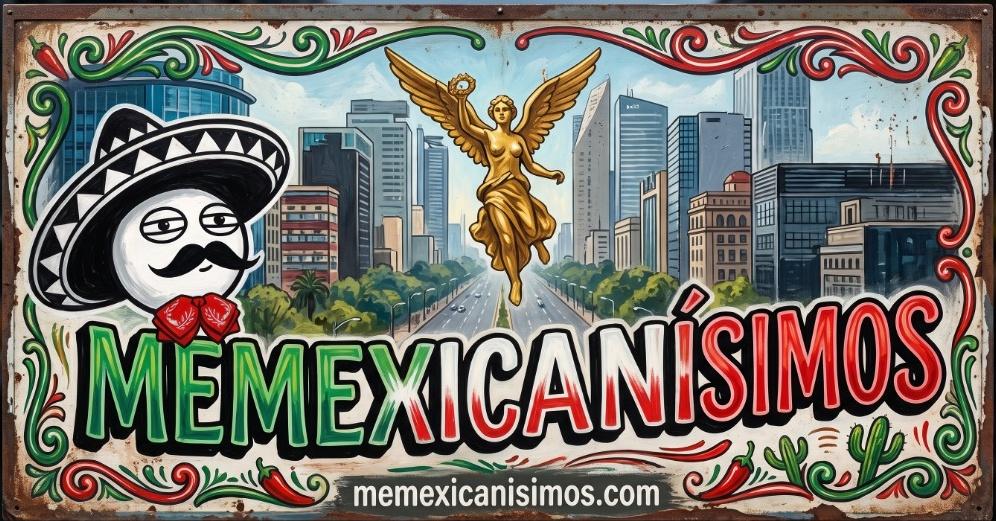
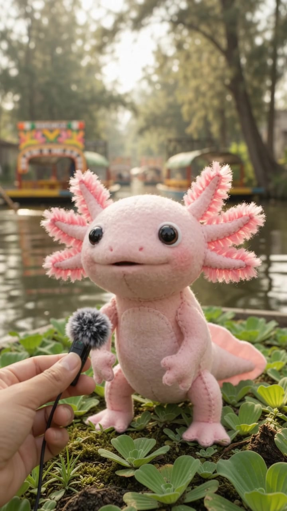
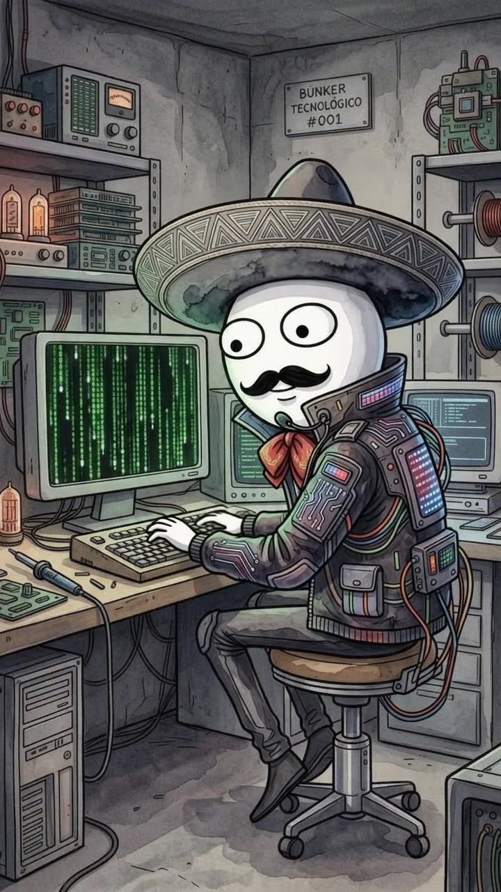
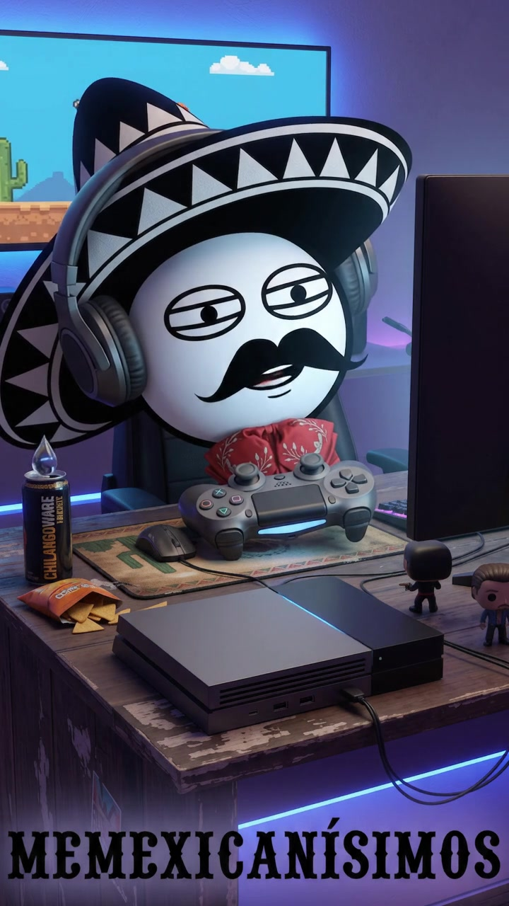

La crónica del día con la información sobre Farándula, Tecnología, Gaming y los 5 puntos clave del día.



Selecciona #TodasLasNotas o explora otra edición diaria en la hemeroteca inferior.
Selecciona cualquier fecha para consultar su plana completa: